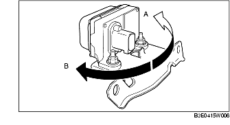

INSPECTION DE CAPTEUR COMBINE
B3E041543770W02
1. Positionner le contacteur d'allumage sur OFF.
2. Brancher le WDS ou équivalent sur le DLC-2.
3. Sélectionner les PID suivants, puis inspecter l'accélération latérale et la vitesse d'embardée.
-
- LAT_ACCL (accélération latérale)
-
- YAW_RATE (vitesse d'embardée)
-
(1) Inspection d'accélération latérale
-
1) Vérifier le changement de LAT_ACCL lorsque le capteur combiné est incliné vers la gauche et vers la droite.

-
• En cas d'anomalie, remplacer le capteur combiné. (Voir la section DEPOSE/REPOSE DE CAPTEUR COMBINE.)
-
Standard
-
Lorsque le capteur est incliné vers la droite (A) :
-
Le LAT_ACCL change positivement.
-
Lorsque le capteur est incliné vers la gauche (B) :
-
Le LAT_ACCL change négativement.
-
(2) Inspection de vitesse d'embardée
-
1) Vérifier le changement de YAW_RATE lorsque le capteur combiné est incliné vers la gauche et vers la droite.

-
• En cas de dysfonctionnement, remplacer le capteur combiné. (voir la section DEPOSE/REPOSE DE CAPTEUR COMBINE.)
-
Standard
-
Lorsque le capteur est tourné vers la droite (A) :
-
Le YAW_RATE change positivement.
-
Lorsque le capteur est tourné vers la gauche (B) :
-
Le YAW_RATE change négativement.